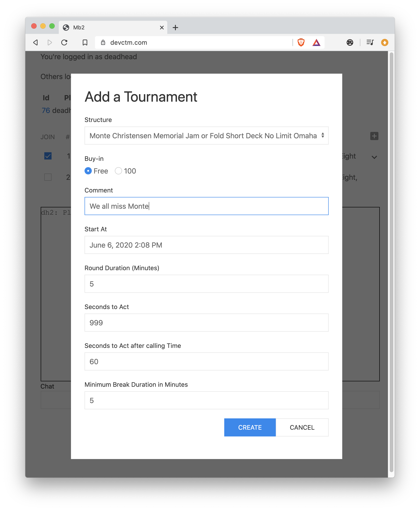

Poker, with your friends
Mb2 is poker software with a nice friendly user base.
Mb2 is in an early stage of development. The server itself is world-class, full-featured, state-of-the art. However…
The user interface is currently rough and this documentation is rougher. Both improve every day, so if you don't like what you see now, come back tomorrow, … or wait a week and see even greater improvement.
Demo
There's a button labeled Demo on
https://devctm.com
Go to the site, click that button, and you'll be told to type start
in the chat box to start a 2-player No-Limit Texas Hold'em tournament.
If you have the shift key down when you click Demo, you'll be able
to choose more than 2 players and games (technically
structures) other than No Limit Hold'em.
Using the demo, you'll start in the lobby, with a demo account. Demo accounts are able to chat with non-demo accounts in the lobby, but are not allowed to join non-demo events. So, after you've played with the demo a little, you may want to create an user account.
Accounts
Accounts are free.
You may create more than one, but please don't mislead.
Currently, no email account is associated with an account. Mb2's purpose is to provide fun, not to sell you things or collect your information. Mb2 currently doesn't even use cookies, nor does it record your IP address.
Your password is never stored in a database. Instead, a hash of your password is stored. That means there's no way for anyone associated with mb2 to recover your password. Since mb2 doesn't use email addresses, the only way to have your password reset is to ask (e.g., via chat or email). So, when you create an account, please remember or write down your password.
Lobby
After you sign in, you'll be in the lobby, where you can see the active tables, a list of upcoming tournaments and recent chat.

The first line in the lobby is the nickname you've logged in as. You may have more than one nickname, but please don't use multiple nicknames to mislead, collude or dump chips.
The second line lists the others logged in.
If any tables are active, each gets a row with the table id and a list of the players at that table. The table id itself is a link. If you click on it, you'll get a pop-up that allows you to observe that table.
Any upcoming tournaments that you're allowed to join are then listed. To join, click the check-box. If you change your mind, before the tournament starts, just click the check-box again.
When you join a tournament there may be esoteric options that you can choose via a pull-down in the right most column. They should be self-explanatory. Above that column is the little white plus sign that brings up the tournament creation modal dialog (see below).
The column labeled # is the number of players currently signed up. If
you want to see which players are signed up, bring your cursor over that
number and the entrants' nicknames will be revealed.
The starting time is in the timezone that your browser is configured to display. That's normally the timezone you're in, but check the three letter timezone abbreviation to be sure.
A synopsis of the tournament structure is in the Tournament column.
If you bring your cursor over the synopsis, more details will drop
down.
The rest of the lobby is chat and a box for you to enter chat. All chat is logged, however, currently only chat that occurs after you sign in will be displayed. That's pretty poor behavior and will be improved.
Creation of a new tournament
If you click on the white plus small icon, you get the following dialog:

The Structure attribute is a pull-down menu from one of approximately 50 pre-existing tournament structures. Currently you can not create your own structure, although traditionally the winner of the 5pm PDT tournament gets to pick the following day's tournaments and may request a new structure.
Tournaments that are created for testing or demo purposes should be Free, since free tournaments don't affect anyone's standings. Tournaments where people are expected to play well should probably have a 100 buy-in if for no other reason than to make it clear that the participants will be taking the tournament seriously.
Adding a comment is optional. If you add a comment, it will show up when people hover over the tournament structure in the listing of upcoming tournaments.
Start At is in the same timezone as upcoming tournaments are displayed in. That's whatever your browser thinks your timezone is. The first time you bring up the "Add a Tournament" dialog, "Start At" is pre-populated with a value that is ten minutes into the future. However, after that, the dialog simply remembers whatever value was in that field previously.
Round Duration (Minutes) is in essence a scaling factor. In most tournaments, all rounds are the same length. When create a new tournament and specify the round duration, what you're really doing is saying how long you want the first round to be. If any rounds have a different duration from the duration of the first round, they'll be scaled.
So, if there's a structure where the odd numbered rounds are 20 minutes and the even numbered rounds are 30 minutes, if you specify Round Duration as 5 minutes, then you'll have a tournament where the odd numbered rounds are 5 minutes and the even ones are 7.5 minutes.
The TOC (Tournament of Champions) style format has a 15 minute Hold'em first round, an 18 minute Stud second round and a 22 minute Omaha/8 third round. So, if "Round Duration (Minutes)" is set to 5, then the second round will be 6 minutes and the third round will be seven minutes, twenty seconds long.
For a dozen or so players, five minute rounds for most structures results in a tournament that finishes in about an hour and a half.
Seconds to Act is how much time a player gets to act before being sent to vacation. No, 999 is not a reasonable number of "Seconds to Act". Typically we use 45 there and that's the default when this dialog comes up.
A player may call time to get more time to act. There currently is no limit on how many times a player can call time. Calling time resets the number of seconds to act (it does not add to the number of seconds to act). So, if "Seconds to Act after calling Time" is set to 60, calling time will mean that the player must act within 60 seconds regardless of how much time to act the player had remaining.
Schedules have breaks built into them, and like Round Duration, they scale based on the same ration of the "Round Duration (Minutes)" setting to the duration of the first level in the structure. That can result in breaks that would be too short were it not for the "Minimum Break Duration in Minutes" setting. However, the duration of a break is like the duration of a round in that it can start in the middle of a hand. The players who are still in the hand still need to finish the hand.
Top Line
At the top of the lobby you're told your nickname (e.g., ☕ deadhead). That can be useful if you want to see how you've
customized your nickname (e.g., with capitalization, punctuation,
whitespace or emojis).
Immediately to the right is a drop-down menu that allows you to see some reports (at minimum the net profit leaderboard and the recent tournaments).
The final item is a bell, which allows you to mute the gong. The gong is rung when a new tournament is added. That alerts people to the presence of the new tournament so they can sign up. If your bell is green, the gong will be played. If gray, it won't. If you hover your mouse over the bell, it will tell you its status.
Two daily tournaments (the 5:05pm PDT and 8:10pm PDT) have the tradition of encouraging the winner to pick the following day's tournament. It's viscerally satisfying to win, create the successor tournament and then bang a gong.
Others
Tables
Tournaments
Chat
Tables
Tables
Games
Mb2 can deal around fifty different variations of poker. This includes common ones like Texas Hold'em, Omaha and Seven Card Stud as well as lesser known games like Badugi, Courchevel and Big O.
Structures
BARGE
TODO
BARGE Rule Book
TODO